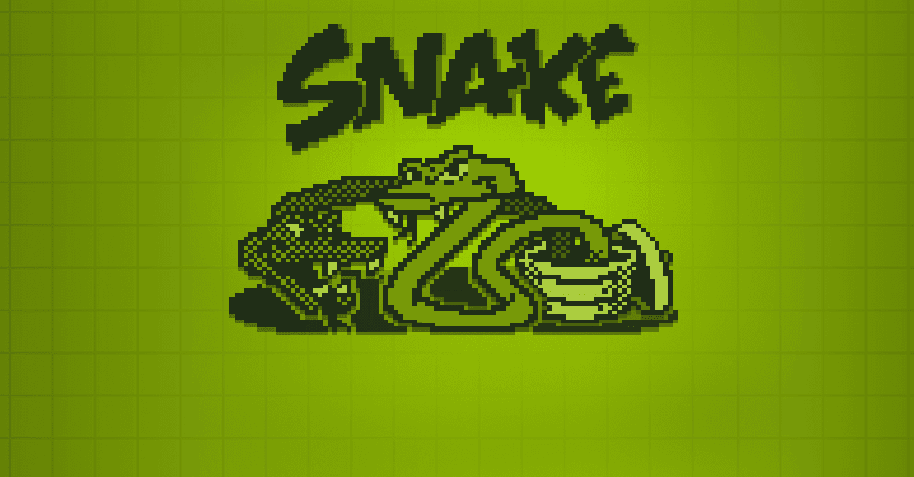

Project overview
For Computer Graphics Design (CGD260S), I developed a Snake game that runs in a web browser. The player collects food to grow the snake, avoids the game boundaries and snake body, and tries to achieve a higher score.
The submitted work also included a separate WebGL experiment using canvas buffers, shader programs and coloured geometric segments. The game's moving grid was built using HTML, CSS Grid and JavaScript rather than WebGL.
Try the interactive demo
Click inside the game below and use the arrow keys, or open the larger standalone version. Press Space to begin.
How I implemented the game
- Created a 20 × 20 grid-based game board and designed the interface using HTML and CSS.
- Wrote JavaScript functions to move and draw the snake, generate food in free cells and update scores.
- Handled keyboard direction changes while preventing direct reversal into the snake's body.
- Added wall and self-collision detection, a restart action, a high-score display and increasing movement speed.
- Explored buffers, GLSL vertex/fragment shaders and geometric rendering in a separate WebGL study.
Project evidence and source code
The live game and its graphics study are included directly in the portfolio. The site files are organised in snake-game/, separate from the main portfolio stylesheet so both projects work independently.


Explore the JavaScript game logic, its CSS styling, or the WebGL demonstration source.
Development notes
The original JavaScript was adapted for this browser demonstration: the food scoring now grows the snake by one cell, collisions end the current game cleanly, and the board scales to smaller screens. The original WebGL snippet required additional buffer/shader setup before it could render independently.
The original CGD260S report described the game design, player controls, food generation, collision detection and graphics programming concepts. I used those materials to prepare this public-facing project summary.